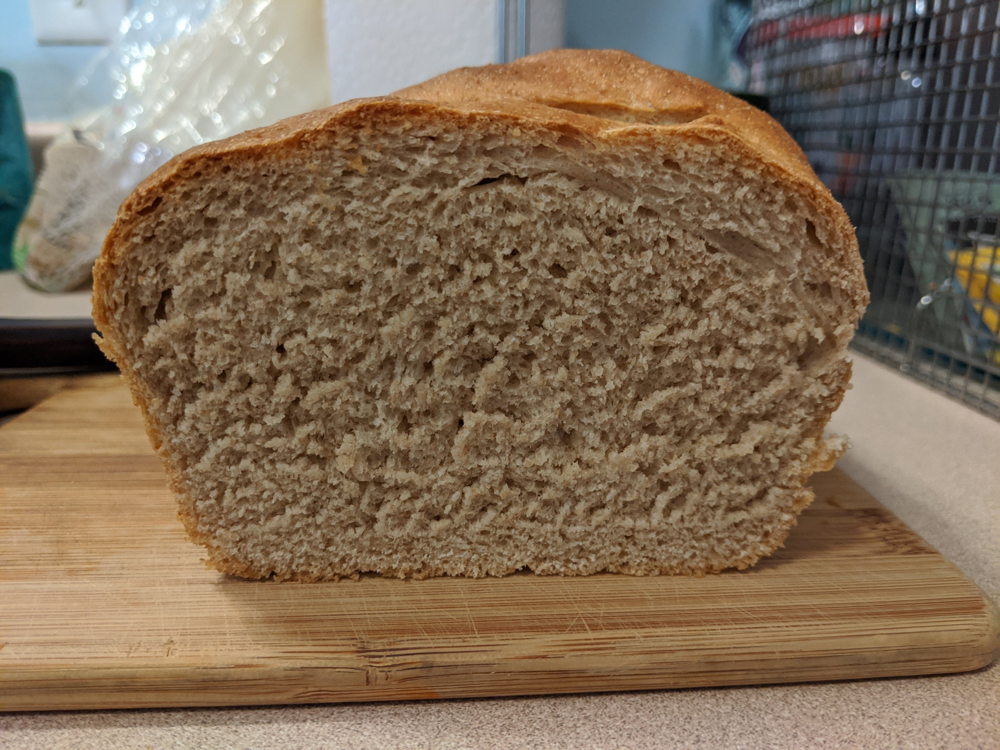

aka the Fancy Standard
Adapted from the Ted Bread recipe in The Grit cookbook
Ingredients
Wet
- 235 grams warm water
- 7 grams instant yeast, or 11 grams active dry yeast
- 14 grams sugar
- 8 grams salt
Dry
- 280 grams All Purpose Flour
- 150 grams Whole Wheat Flour
Instructions
- Combine all of the wet ingredients except for the olive oil. Give it a good stir, let it sit for about 10 minutes, until frothy and yeast has multiplied a bit.
- In a separate (and bigger) bowl, combine all of the dry ingredients.
- Combine your wet mix with your dry mix. Use a fork to stir around the mixture until it’s all combined and a bit shaggy.
- Knead the dough for about 5 minutes. The dough may seem a bit dry, keep kneading and it will get more moist but not sticky.
- Put the dough in a greased bowl, cover with plastic, and let rise for 45 minutes to an hour. Until roughly doubled in size.
- Grease a loaf pan with shortening or oil. I prefer shortening because you only need a very small amount, and after baking the loaf comes out of the pan much more easily than with canola or olive oil.
- Punch your dough down and shape into a flat rectangle with your hands. Fold the dough into thirds by grabbing the left two corners and folding them to the center of the dough. Fold the right two corners on top of the left layer.
- Press the dough down flat again, and fold in thirds again, but from top two corners, then bottom two corners.
- Lay the dough so the seam side is facing upward. Pinch the ends of the dough together to seal them and fold them slightly onto the top of the dough.
- Put the loaf in your greased loaf pan, seam side down, and let rise for 45 minutes to an hour. Use the “finger test” to test if the bread is ready to bake. If you press a finger into your loaf and it springs back right away it is not ready. If you press a finger in and it slowly springs back, but leaves a fingerprint it is ready to bake. If it does not spring back the dough is over-proofed, bake it anyway, it’ll probably still be better than store bought.
- Preheat the oven to 375. Put a cast iron pan on the bottom rack at the same time you start the oven.
- Score the loaf three times across the top diagonally. Your knife blade should be 30 degrees perpendicular to the surface of the loaf. Don't score very deeply if you over-proofed your dough.
- When the oven is done preheating, boil a cup of water and set it aside (I use an electric tea kettle for this). Put your loaf in the oven, and pour the very hot water into your cast iron pan.
- Bake for 35 minutes, or until the loaf is golden brown. Rotate the loaf 180 degrees halfway through baking.
- Take the loaf out of the pan as soon as you can and let it cool to room temperature on a cooling rack (about 40 minutes). If your loaf is stuck to the side of the pan let it cool 10 minutes, then put on a cooling rack.
Photos
Bread in the loaf pan:
Bread after it's rested in the loaf pan for about 45 minutes:
Bread out of the oven after cooling:
Bread cross-section after cutting: 
"Meatball" sandwich made with Fancy Standard:
Close up of meatball sandwich with fancy standard: